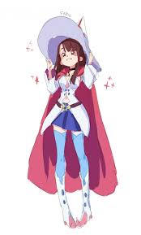
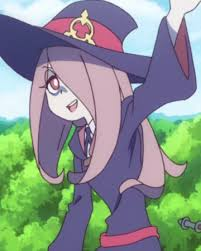
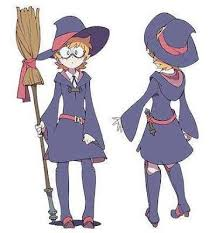
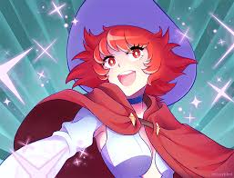

Akko: É uma garota comum, que deseja ser uma bruxa. Ingressa na Luna Nova e tem como mentora sua professora de Astronomia Mágica, Ursula. Dentre suas características, as que se destacam são: impulsividade, otimismo e energia. Quando é posta diante de um desafio, o encara com determinação, mesmo que haja dificuldades para concluí-lo. Arriscaria a si própria e sua reputação para fazer o que é certo.
Sucy: É uma das amigas mais próximas de Akko. Inicialmente, suas colegas a viam como uma "aberração excêntrica", por suas preferências na magia, como achar graça em travessuras assustadoras.
Lotte: A primeira amiga de Akko que aceita dar carona em sua vassoura no primeiro dia de aula. Estudiosa, tem a habilidade de conversar com os espíritos de objetos.
Chariot: Desprezada pela comunidade das bruxas por ter utilizado a magia para entretenimento, atualmente está desaparecida.
